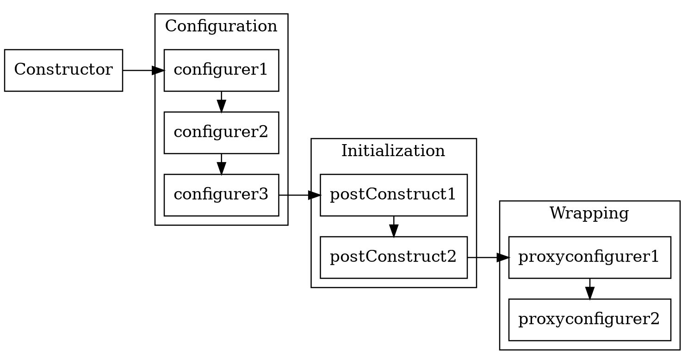
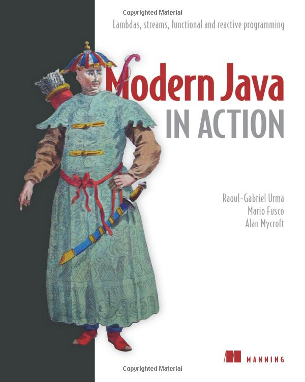

NoUniqueBeanDefinitionException: No qualifying bean of
type 'edu.phystech.robotlecturer.Bar' available: expected
single matching bean but found 3: bar1,bar2,bar3Core Java. Лекция 14
Spring AOP (окончание). Spring Boot
@inponomarev
Иван Пономарёв, КУРС/МФТИ
Жизненный цикл бина (напоминание)

Разруливание неоднозначностей
Привязка по имени (неявная)
@Component
public class Foo {
//Не работает... :-(
@Autowired
private Bar bar;
//Работает!! :-)
@Autowired
private Bar bar1;
...
}Привязка по имени (явная)
@Component
public class Foo {
@Autowired
@Qualifier("bar1")
private Bar bar;
...
}Помечаем одну из имплементаций как @Primary
@Component
@Primary
public class Bar1 implements Bar {...}
@Component
public class Foo {
//Подставится Bar1
@Autowired
private Bar bar;
...
}Но это работает, лишь если действительно один из бинов помечен как @Primary, иначе "NoUniqueBeanDefinitionException: more than one 'primary' bean found among candidates".
Но гораздо чаще нам нужны сразу все!
@Component
public class Foo {
@Autowired
private List<Bar> bar;
//ИЛИ
@Autowired
private Map<String,Bar> bar;Впрыскивать можно не только бины, но и что-то попроще
@Configuration
//Путь к файлу с настройками
@PropertySource("classpath:config.properties")
public class Config {
}
@Component
public class Foo {
@Value("${url}")
String url;
@Value("${password}")
String password;Также можно использовать SpEL-выражения, например #{bar.url}.
Инициализация
Конструктор не годится в качестве инициализирующего метода!
Инициализация
@PostConstruct— стандартная Java-аннотация, может быть установлена над методом инициализации.Если навесить аннотацию в классе нельзя, то
@Bean(initMethod= "init")
Финализация
Финализация
Симметрично инициализации — при завершении работы контейнера.
При завершении приложения вызывается
context.destroy(), запускающий механизм финализации.@PreDestroy— стандартная Java-аннотация.Если навесить аннотацию в классе нельзя, то
@Bean(destroyMethod = "destroy").Также метод
close()для классов, реализующих интерфейсCloseable.Закрываем пулы тредов и соединений.
Практическая задача
Хотим сделать трейсинг приложения: перед началом и после завершения метода должно выводиться в лог его название и штамп времени.
Пусть у нас 500 классов по 5 методов
Значит, в 2500 мест надо копировать код:
не многовато ли??
не забудем ли какие-то из методов?
смешение бизнес-логики и служебного кода?
Aspect-oriented programming спешит на помощь
Типичные задачи:
Логирование: каждый вызов метода должен отмечаться в логе!
Безопасность: при вызове каждого метода надо проверять, имеем ли мы право на вызов!
Управление транзакциями: перед началом метода открывать транзакцию, при удачном завершении коммитить, при неудачном — откатывать.
AOP помогает решать эти задачи без дублирования кода внутри методов.
Большое количество аспектов уже написано.
Терминология AOP
Joinpoint — место в коде, в выполнение которого мы «вмешиваемся» (и начинаем выполнять что-то своё). В теории может соответствовать вызовам методов, инициализации классов и инстанцированию объектов, но в Spring AOP — это всегда вызов метода.
Advice — код, который «впрыскивается» и выполняется в joinpoint.
Pointcut — тем или иным способом определённое множество joinpoint-ов. Например, «все методы, начинающиеся со слова get». Или: «все методы, аннотированные аннотацией
@Benchmarked». Связывая pointcut-ы c advice-ами, мы определяем, что именно и когда будет работать.
Терминология AOP
Aspect — комбинация advices+pointcuts, оформленная в виде отдельного класса. Определяет добавляемую в приложение логику, ответственную за какую-то определённую задачу (например, трассировку).
Weaving — процесс «вплетения» кода advices в нужные места кода приложения.
Target — метод, чьё поведение изменяется с помощью AOP.
Как можно реализовать AOP?
Статически: вплетение на уровне исходников или байт-кода.
Динамически: создавая прокси и используя вплетение в runtime.
Spring использует динамический AOP.
Вопрос: какие вы видите достоинства и недостатки у того и другого метода?
Прокси-объект: реализация

Создаётся по необходимости.
Перехватывает вызовы всех методов на target.
Проверяет, не сработал ли pointcut — и вызывает advice.
Использование AOP в Spring
Для активизации BeanPostProcessor-а, сканирующего AOP-аннотации, надо в конфигурации включить аннотацию @EnableAspectJAutoProxy
@Configuration
@EnableAspectJAutoProxy
public class AppConfig{
...
}(что такое BeanPostProcessor — мы увидим в дальнейшем, но вы уже знаете, что это конфигуратор объекта)
Пример аспекта
@Component @Aspect
public class BenchmarkAspect {
@Around("@annotation(Benchmark)")
//pointcut expression ^^^
public Object execEntryPoint(ProceedingJoinPoint joinPoint)
throws Throwable {
System.out.printf("[[[BENCHMARK method %s%n",
joinPoint.getSignature().getName());
long start = System.nanoTime();
Object retVal = joinPoint.proceed();
long end = System.nanoTime();
System.out.printf("Time: %dns]]]%n", end - start);
return retVal;
}
}Spring AOP checklist
@EnableAspectJAutoProxyнад конфигурацией.@Aspectнад аспектом.@Component/@Beanдля аспекта, и сам аспект должен входить в конфигурацию приложения.Аспект не перехватывает методы, которые вызываются
@PostConstruct-ом.
Spring AOP checklist
@EnableAspectJAutoProxyнад конфигурацией.@Aspectнад аспектом.@Component/@Beanдля аспекта, и сам аспект должен входить в конфигурацию приложения.Аспект не перехватывает методы, которые вызываются
@PostConstruct-ом. Вопрос: почему?
Пример аспекта
@Component @Aspect
public class BenchmarkAspect {
@Around("@annotation(Benchmark)")
//pointcut expression ^^^
public Object execEntryPoint(ProceedingJoinPoint joinPoint)
throws Throwable {
System.out.printf("[[[BENCHMARK method %s%n",
joinPoint.getSignature().getName());
long start = System.nanoTime();
Object retVal = joinPoint.proceed();
long end = System.nanoTime();
System.out.printf("Time: %dns]]]%n", end - start);
return retVal;
}
}Какие бывают advices
@Before@AfterReturning(нормальное завершение)@AfterThrowing(exception)@After(нормальное завершение и exception)@Around
@Before
@Before("@annotation(Benchmark)")
public void beforeFooMethods(JoinPoint jp) {
String methodName = jp.getSignature().getName();
System.out.println(methodName);
}@After
@AfterReturning(pointcut= "execution(* edu.phystech..*.foo())",
returning = "retVal")
public void afterFoo(Double retVal) {
System.out.println("AFTER foo()" + retVal);
}
@AfterThrowing(
pointcut= "execution(* aop.example.application..*.*(..))",
throwing = "ex")
public void dbException(DatabaseRuntimeException ex){
System.out.println(ex);
}Неувядающая классика
вызов @Tranasctional-метода из самого бина
@Service
public class MyService {
public void doSomething() {
// ...
doSomethingElse();
}
//Transactional тут не работает... :-(((
@Transactional
public void doSomethingElse() {
// ...
}
}В чем причина?
Workaround
@Service
public class MyService {
@Autowired
ObjectFactory<MyService> self;
public void doSomething() {
// ...
self.getObject().doSomethingElse();
}
@Transactional
public void doSomethingElse() {
// ...
}
}BeanPostProcessor interface
public interface BeanPostProcessor {
//впрыскиваем в бин значения
default Object postProcessBeforeInitialization(
Object bean, String beanName) throws BeansException {
return bean;
}
//возвращаем обёртку над бином
default Object postProcessAfterInitialization(
Object bean, String beanName) throws BeansException {
return bean;
}
}BeanPostProcessor
Собственный BeanPostProcessor
@Component public class InjectRandomIntAnnotationBeanPostProcessor
implements BeanPostProcessor {
@Override public Object postProcessBeforeInitialization(
Object bean, String beanName) throws BeansException {
for (Field f : ReflectionUtils.getAllFields(bean.getClass())) {
InjectRandomInt ann = f.getAnnotation(InjectRandomInt.class);
if (ann != null) {
int value = ThreadLocalRandom.current()
.nextInt(ann.min(), ann.max() + 1);
f.setAccessible(true);
try { f.set(bean, value); }
catch (IllegalAccessException e) {
throw new NotWritablePropertyException(
bean.getClass(), f.getName()); }
} }
return bean;
} }Демо
AnnotationConfigApplicationContext
DI
AOP
BeanPostProcessor
Test with ContextConfiguration
Spring Boot
Spring Boot
Convention over configuration
Подключение готовых сконфигурированных блоков через «стартеры»
Включая встроенный Tomcat или Jetty (что инвертировало старую модель)
Метрики, health checks, настройка приложения через конфигурационный файл
Всё на аннотациях
Dependency Management
<parent>
<groupId>org.springframework.boot</groupId>
<artifactId>spring-boot-starter-parent</artifactId>
<!-- ...to spring-boot-dependencies, 3356 LOC -->
<version>2.2.1.RELEASE</version>
</parent>Подключаем стартеры
<!-- «Мы хотим веб-сервис»-->
<dependency>
<groupId>org.springframework.boot</groupId>
<artifactId>spring-boot-starter-web</artifactId>
<!-- А почему не указываем версию?-->
</dependency>Пишем Main-класс
//Пакеты не указываем
@SpringBootApplication
public class Main {
public static void main(String[] args) throws SQLException, IOException {
/*Метод run возвращает ApplicationContext,
но он нам не нужен :-)*/
SpringApplication.run(Main.class, args);
}
}Пишем контроллер
//Это тоже @Controller, а значит, bean
@RestController
public class HelloController {
@GetMapping("/hello")
public String sayHello(@RequestParam("name") String name) {
return String.format("Hello, %s!", name);
}
}За сборку jar-ника отвечает spring-boot-maven-plugin
<plugin>
<groupId>org.springframework.boot</groupId>
<artifactId>spring-boot-maven-plugin</artifactId>
</plugin>Получается «жирный» executable jar.
Можно сделать так, что он будет в буквальном смысле executable.
Как Spring Boot Starter поднимает свои бины?
Spring Boot сканирует файловую систему ClassPath на наличие файлов
spring.factories.

Демо
Spring Boot
Spring JDBC Template
Spring Boot Test
Пришла пора закругляться :-)
Всё, что я рассказал в этом курсе — уже Legacy.
Когда я начинал делать этот курс в 2019, текущей версией была 11 и казалось, что 8 — это на века.
Мы работали на Java 25 (LTS), но каждый март и сентябрь выходят новые версии.
Синтаксис Java развивается
Modularization (Java 9+)
Type Inference (Java 10+)
Switch Expressions (Java 12+)
Multiline Strings (Java 13+)
Records (Java 14+)
Pattern matching (Java 17+)
Проект Loom (delivered in 25 LTS )
Virtual threads: выглядят как обычный
java.lang.Thread, но планируются рантаймом поверх небольшого числа OS-потоков, позволяя запускать сотни тысяч параллельных задач без сложных реактивных стеков и тонкой настройки пулов.Java догоняет Kotlin?
Проект Valhalla
Value/inline classes (классы-значения), которые ведут себя как объекты, но могут храниться без отдельной аллокации и ссылки, с плоским размещением в массивах и полях.
Specialized generics: возможность избегать autoboxing/unboxing (
List<int>).
«Вселенная Java» расширяется со скоростью света
Не только Spring:
Microframeworks — for serverless
Не только Java language:
Groovy
Kotlin
Scala
Выводы — напутствия
Никогда не переставайте изучать новое
"Here, you see, it takes all the running you can do, to keep in the same place. If you want to get somewhere else, you must run at least twice as fast as that!”

Старое тоже полезно изучать
 |  |  |
Помните про свою профессиональную ответственность
От работы программистов в XXI веке зависят судьбы людей
Даже если это не программа, управляющая самолётом или аппаратом ИВЛ
Помните про:
Security
Privacy
Accessibility
Делайте мир лучше!
Становитесь частью community!
JUGs: Москва, Санкт-Петербург, Новосибирск.
Будете на Кипре — посетите JUG.CYConferences: JPoint, Joker, SnowOne.
Добро пожаловать во вселенную Java :-)